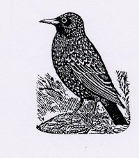

Monday, August the 23rd, 2004
back to: title, date or indexes
Also referring to last Wednesday is Tim Thurn. I am unable to quote his letter verbatim, as it was one of those increasingly rare letters written with pen and ink on paper, placed in an envelope with a stamp on it, and delivered to Hooting Yard by a postman*, and I inadvertently threw it away. The gist of Tim's scribbled note was that the illustration of a starling only showed a side view. What, he asks, does the other side look like? This seems at first to be a fatuous question, but perhaps Tim is on to something. Here is the other side of a starling:

* NOTE : The postman who delivered Tim's letter was not The Postman, as played by Kevin Costner in that foolish, foolish film, although there are times when, looking out of the window, one could be forgiven for thinking that a nuclear holocaust had already happened..